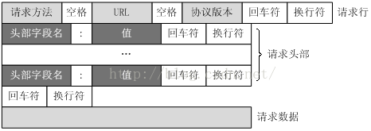
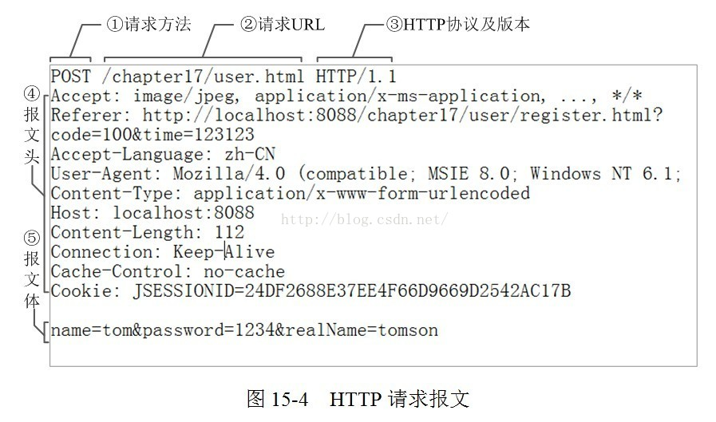
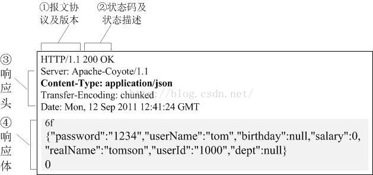

# HTTP 协议
# HTTP 协议的主要特点
- 支持客户 / 服务器模式。
- 简单快速：客户向服务器请求服务时，只需传送请求方法和路径。请求方法常用的有 GET、HEAD、POST。每种方法规定了客户与服务器联系的类型不同。
由于 HTTP 协议简单，使得 HTTP 服务器的程序规模小，因而通信速度很快。 - 灵活：HTTP 允许传输任意类型的数据对象。正在传输的类型由 Content-Type 加以标记。
- 无连接：无连接的含义是限制每次连接只处理一个请求。服务器处理完客户的请求，并收到客户的应答后，即断开连接。采用这种方式可以节省传输时间。
- 无状态：HTTP 协议是无状态协议。无状态是指协议对于事务处理没有记忆能力。缺少状态意味着如果后续处理需要前面的信息，则它必须重传，这样可能导致每次连接传送的数据量增大。另一方面，在服务器不需要先前信息时它的应答就较快。
# HTTP 协议报文
# 请求报文
# 请求行
请求行由请求方法字段、URL 字段和 HTTP 协议版本字段 3 个字段组成，它们用空格分隔。比如 GET /data/info.html HTTP/1.1
方法字段就是 HTTP 使用的请求方法，比如常见的 GET/POST
其中 HTTP 协议版本有两种：HTTP1.0/HTTP1.1 可以这样区别：
HTTP1.0 对于每个连接都只能传送一个请求和响应，请求就会关闭，HTTP1.0 没有 Host 字段；而 HTTP1.1 在同一个连接中可以传送多个请求和响应，多个请求可以重叠和同时进行，HTTP1.1 必须有 Host 字段。
# 请求头
HTTP 客户程序 (例如浏览器)，向服务器发送请求的时候必须指明请求类型 (一般是 GET 或者 POST)。如有必要，客户程序还可以选择发送其他的请求头。大多数请求头并不是必需的，但 Content-Length 除外。对于 POST 请求来说 Content-Length 必须出现。
常见的请求头字段含义：
Accept： 浏览器可接受的 MIME 类型。
Accept-Charset：浏览器可接受的字符集。
Accept-Encoding：浏览器能够进行解码的数据编码方式，比如 gzip。Servlet 能够向支持 gzip 的浏览器返回经 gzip 编码的 HTML 页面。许多情形下这可以减少 5 到 10 倍的下载时间。
Accept-Language：浏览器所希望的语言种类，当服务器能够提供一种以上的语言版本时要用到。
Authorization：授权信息，通常出现在对服务器发送的 WWW-Authenticate 头的应答中。
Content-Length：表示请求消息正文的长度。
Host： 客户机通过这个头告诉服务器，想访问的主机名。Host 头域指定请求资源的 Intenet 主机和端口号，必须表示请求 url 的原始服务器或网关的位置。HTTP/1.1 请求必须包含主机头域，否则系统会以 400 状态码返回。
If-Modified-Since：客户机通过这个头告诉服务器，资源的缓存时间。只有当所请求的内容在指定的时间后又经过修改才返回它，否则返回 304 “Not Modified” 应答。
Referer：客户机通过这个头告诉服务器，它是从哪个资源来访问服务器的 (防盗链)。包含一个 URL，用户从该 URL 代表的页面出发访问当前请求的页面。
User-Agent：User-Agent 头域的内容包含发出请求的用户信息。浏览器类型，如果 Servlet 返回的内容与浏览器类型有关则该值非常有用。
Cookie：客户机通过这个头可以向服务器带数据，这是最重要的请求头信息之一。
Pragma：指定 “no-cache” 值表示服务器必须返回一个刷新后的文档，即使它是代理服务器而且已经有了页面的本地拷贝。
From：请求发送者的 email 地址，由一些特殊的 Web 客户程序使用，浏览器不会用到它。
Connection：处理完这次请求后是否断开连接还是继续保持连接。如果 Servlet 看到这里的值为 “Keep- Alive”，或者看到请求使用的是 HTTP 1.1 (HTTP 1.1 默认进行持久连接)，它就可以利用持久连接的优点，当页面包含多个元素时 (例如 Applet，图片)，显著地减少下载所需要的时间。要实现这一点，Servlet 需要在应答中发送一个 Content-Length 头，最简单的实现方法是：先把内容写入 ByteArrayOutputStream，然后在正式写出内容之前计算它的大小。
Range：Range 头域可以请求实体的一个或者多个子范围。例如，
表示头 500 个字节：bytes=0-499
表示第二个 500 字节：bytes=500-999
表示最后 500 个字节：bytes=-500
表示 500 字节以后的范围：bytes=500-
第一个和最后一个字节：bytes=0-0,-1
同时指定几个范围：bytes=500-600,601-999
但是服务器可以忽略此请求头，如果无条件 GET 包含 Range 请求头，响应会以状态码 206 (PartialContent) 返回而不是以 200 (OK)。
UA-Pixels，UA-Color，UA-OS，UA-CPU：由某些版本的 IE 浏览器所发送的非标准的请求头，表示屏幕大小、颜色深度、操作系统和 CPU 类型。
# 空行
它的作用是通过一个空行，告诉服务器请求头部到此为止。
# 请求体
若方法字段是 GET，则此项为空，没有数据
若方法字段是 POST, 则通常来说此处放置的就是要提交的数据
比如要使用 POST 方法提交一个表单，其中有 user 字段中数据为 “admin”, password 字段为 123456，那么这里的请求数据就是 user=admin&password=123456，使用 & 来连接各个字段。


# 响应报文
# 状态行
响应行一般由协议版本、状态码及其描述组成 比如 HTTP/1.1 200 OK
其中协议版本 HTTP/1.1 或者 HTTP/1.0，200 就是它的状态码，OK 则为它的描述。
// 常见状态码：
100~199：表示成功接收请求，要求客户端继续提交下一次请求才能完成整个处理过程。
200~299：表示成功接收请求并已完成整个处理过程。常用 200
300~399：为完成请求，客户需进一步细化请求。例如：请求的资源已经移动一个新地址、常用 302 (意味着你请求我，我让你去找别人),307 和 304 (我不给你这个资源，自己拿缓存)
400~499：客户端的请求有错误，常用 404 (意味着你请求的资源在 web 服务器中没有) 403 (服务器拒绝访问，权限不够)
500~599：服务器端出现错误，常用 500
更加详细的状态码
# 响应头
响应头用于描述服务器的基本信息，以及数据的描述，服务器通过这些数据的描述信息，可以通知客户端如何处理等一会儿它回送的数据。
设置 HTTP 响应头往往和状态码结合起来。例如，有好几个表示 “文档位置已经改变” 的状态代码都伴随着一个 Location 头，而 401 (Unauthorized) 状态代码则必须伴随一个 WWW-Authenticate 头。然而，即使在没有设置特殊含义的状态代码时，指定应答头也是很有用的。应答头可以用来完成：设置 Cookie，指定修改日期，指示浏览器按照指定的间隔刷新页面，声明文档的长度以便利用持久 HTTP 连接，…… 等等许多其他任务。
常见的响应头字段含义：
Allow：服务器支持哪些请求方法 (如 GET、POST 等)。
Content-Encoding：文档的编码 (Encode) 方法。只有在解码之后才可以得到 Content-Type 头指定的内容类型。利用 gzip 压缩文档能够显著地减少 HTML 文档的下载时间。Java 的 GZIPOutputStream 可以很方便地进行 gzip 压缩，但只有 Unix 上的 Netscape 和 Windows 上的 IE4、IE5 才支持它。因此，Servlet 应该通过查看 Accept-Encoding 头 (即 request.getHeader (“Accept- Encoding”)) 检查浏览器是否支持 gzip，为支持 gzip 的浏览器返回经 gzip 压缩的 HTML 页面，为其他浏览器返回普通页面。
Content-Length：表示内容长度。只有当浏览器使用持久 HTTP 连接时才需要这个数据。如果你想要利用持久连接的优势，可以把输出文档写入 ByteArrayOutputStram，完成后查看其大小，然后把该值放入 Content-Length 头，最后通过 byteArrayStream.writeTo (response.getOutputStream () 发送内容。
Content- Type：表示后面的文档属于什么 MIME 类型。Servlet 默认为 text/plain，但通常需要显式地指定为 text/html。由于经常要设置 Content-Type，因此 HttpServletResponse 提供了一个专用的方法 setContentType。
Date：当前的 GMT 时间，例如，Date:Mon,31Dec200104:25:57GMT。Date 描述的时间表示世界标准时，换算成本地时间，需要知道用户所在的时区。你可以用 setDateHeader 来设置这个头以避免转换时间格式的麻烦。
Expires：告诉浏览器把回送的资源缓存多长时间，-1 或 0 则是不缓存。
Last-Modified：文档的最后改动时间。客户可以通过 If-Modified-Since 请求头提供一个日期，该请求将被视为一个条件 GET，只有改动时间迟于指定时间的文档才会返回，否则返回一个 304 (Not Modified) 状态。Last-Modified 也可用 setDateHeader 方法来设置。
Location：这个头配合 302 状态码使用，用于重定向接收者到一个新 URI 地址。表示客户应当到哪里去提取文档。Location 通常不是直接设置的，而是通过 HttpServletResponse 的 sendRedirect 方法，该方法同时设置状态代码为 302。
Refresh：告诉浏览器隔多久刷新一次，以秒计。
Server：服务器通过这个头告诉浏览器服务器的类型。Server 响应头包含处理请求的原始服务器的软件信息。此域能包含多个产品标识和注释，产品标识一般按照重要性排序。Servlet 一般不设置这个值，而是由 Web 服务器自己设置。
Set-Cookie：设置和页面关联的 Cookie。Servlet 不应使用 response.setHeader (“Set-Cookie”, …)，而是应使用 HttpServletResponse 提供的专用方法 addCookie。
Transfer-Encoding：告诉浏览器数据的传送格式。
WWW-Authenticate：客户应该在 Authorization 头中提供什么类型的授权信息？在包含 401 (Unauthorized) 状态行的应答中这个头是必需的。例如，response.setHeader (“WWW-Authenticate”, “BASIC realm=\”executives\”“)。注意 Servlet 一般不进行这方面的处理，而是让 Web 服务器的专门机制来控制受密码保护页面的访问。
注：设置应答头最常用的方法是 HttpServletResponse 的 setHeader，该方法有两个参数，分别表示应答头的名字和值。和设置状态代码相似，设置应答头应该在发送任何文档内容之前进行。
setDateHeader 方法和 setIntHeadr 方法专门用来设置包含日期和整数值的应答头，前者避免了把 Java 时间转换为 GMT 时间字符串的麻烦，后者则避免了把整数转换为字符串的麻烦。
HttpServletResponse 还提供了许多设置
setContentType：设置 Content-Type 头。大多数 Servlet 都要用到这个方法。
setContentLength：设置 Content-Length 头。对于支持持久 HTTP 连接的浏览器来说，这个函数是很有用的。
addCookie：设置一个 Cookie (Servlet API 中没有 setCookie 方法，因为应答往往包含多个 Set-Cookie 头)。
# 空行
它的作用是通过一个空行，告诉服务器请求头部到此为止。
# 响应体
响应体就是响应的消息体，如果是纯数据就是返回纯数据，如果请求的是 HTML 页面，那么返回的就是 HTML 代码，如果是 JS 就是 JS 代码，如此之类。

# HTTP 方法
- GET：获取资源
- POST：传输资源
- PUT：更新资源
- DELETE：删除资源
- HEAD：获取报文首部
# POST 请求和 GET 请求的区别
- GET 在浏览器回退时是无害的，而 POST 会再次提交请求。
- GET 产生的 URL 地址可以被收藏，而 POST 不可以。
- GET 请求会被浏览器主动缓存，而 POST 不会，除非手动设置。
- GET 请求只能进行 url 编码，而 POST 支持多种编码方式。
- GET 请求参数会被完整保留在浏览器历史记录里，而 POST 中的参数不会被保留。
- GET 请求在 URL 中传送的参数是有长度限制的，而 POST 没有。
- 对参数的数据类型，GET 只接受 ASCII 字符，而 POST 没有限制。
- GET 比 POST 更不安全，因为参数直接暴露在 URL 上，所以不能用来传递敏感信息。
- GET 参数通过 URL 传递，POST 放在 Request body 中。
# HTTP 连接
# HTTP 持久连接
HTTP 协议采用 “请求 - 应答” 模式，当使用普通模式，即非 Keep-Alive 模式时，每个请求 / 应答客户和服务器都要新建一个连接，完成后立即断开连接（HTTP 协议为无连接的协议。
当使用 Keep-Alive 模式（又称持久连接，连接重用）时，Keep-Alive 功能使客户端到服务器端的连接持续有效，当出现服务器的后继请求时，Keep-Alive 功能避免了建立或者重新建立连接。
只有 http1.1 开始支持持久连接
# 管线化
在使用持久连接的情况下，某个连接上的消息传递是这样的：
请求 1-> 响应 1-> 请求 2-> 响应 2-> 请求 3-> 响应 3
管线化，则消息的传递变成这样：
请求 1-> 请求 2-> 请求 3-> 响应 1-> 响应 2-> 响应 3
# 管线化的特点
-
管线化机制通过持久连接完成，仅 HTTP/1.1 支持此技术
-
只有 GET 和 HEAD 请求可以进行管线化，而 POST 则有所限制
-
初次创建连接时不应启动管线机制，因为对方 (服务器) 不一定支持 HTTP/1.1 版本的协议
-
管线化不会影响响应到来的顺序，如上面的例子所示，响应返回的顺序并未改变
-
HTTP /1.1 要求服务器端支持管线化，但并不要求服务器端也对响应进行管线化处理，只是要求对于管线化的请求不失败即可
-
由于。上面提到的服务器端问题，开启管线化很可能并不会带来大幅度的性能提升，而且很多服务器端和代理程序对管线化的支持并不好，因此现代浏览器如 Chrome 和 Firefox 默认并未开启管线化支持